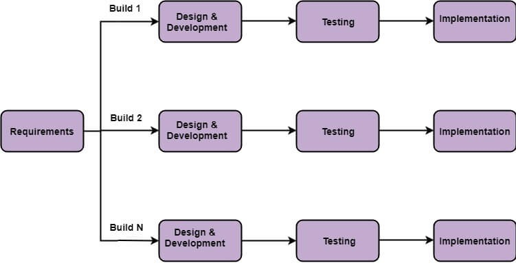

Pengertian Metodologi Incremental
Metodologi Incremental adalah proses pengembangan perangkat lunak di mana
persyaratan dibagi menjadi beberapa modul mandiri dari siklus pengembangan perangkat lunak.
Dalam model ini, setiap modul melalui persyaratan, desain, implementasi dan fase pengujian.
Setiap rilis berikutnya dari modul menambahkan fungsi ke rilis sebelumnya. Proses berlanjut
sampai sistem selesai tercapai.

Tahapan Metodologi Incremental
-
Requirement analysis adalah fase yang berperan penting untuk mengembangan perangkat lunak,
karena keahlian analisis produk mengidentifikasi persyaratan dan persyaratan fungsional sistem.
-
Design & Development Desain fungsi sistem dan metode pengembangan selesai dengan sukses.
Ketika perangkat lunak mengembangkan kepraktisan baru, model inkremental menggunakan gaya dan fase pengembangan.
-
Testing dilakukan dengan memeriksa kinerja setiap fungsi yang ada serta fungsionalitas
tambahan. Dalam tahap pengujian, berbagai metode yang digunakan untuk menguji perilaku setiap tugas.
-
Implementation adalah fase pengkodean sistem pengembangan yang melibatkan pengkodean akhir
yang dirancang dalam tahap merancang dan pengembangan dan menguji fungsionalitas dalam tahap pengujian.
Setelah menyelesaikan fase ini, jumlah produk yang bekerja ditingkatkan dan ditingkatkan ke produk sistem akhir